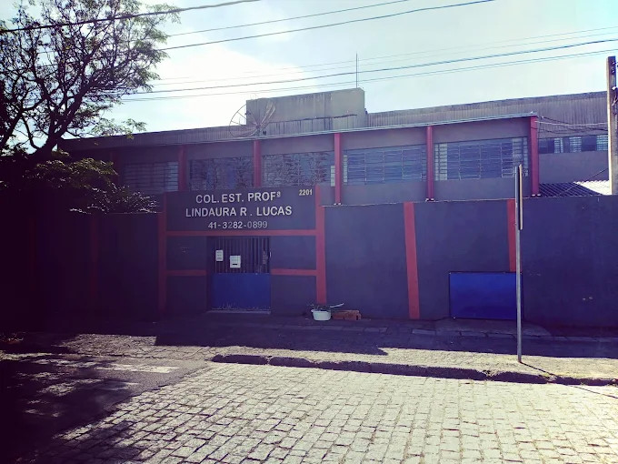

Colégio Estadual Prof. Lindaura Ribeiro Lucas
O Colégio Lindaura é uma instituição de ensino comprometida com a formação acadêmica e profissional de seus alunos, oferecendo um ambiente acolhedor, estruturado e voltado para o desenvolvimento completo do estudante. Atendendo turmas desde o 6º ano do Ensino Fundamental até o 3º ano do Ensino Médio, o colégio busca preparar seus alunos não apenas para os desafios acadêmicos, mas também para o mercado de trabalho e para a vida em sociedade, incentivando o pensamento crítico, a responsabilidade e a autonomia.

Cursos Técnicos Integrados
Administração
O curso técnico em Administração do Colégio Lindaura tem como objetivo formar alunos com visão empreendedora e conhecimentos sólidos sobre o funcionamento das organizações. Durante a formação, os estudantes aprendem conteúdos como gestão financeira, marketing, recursos humanos, logística e planejamento estratégico. No primeiro ano, o foco é na introdução aos conceitos administrativos e no desenvolvimento de habilidades básicas de organização e comunicação. No segundo ano, os alunos aprofundam seus conhecimentos em áreas como finanças e gestão de pessoas, além de iniciarem atividades mais práticas. Já no terceiro ano, o curso se volta para a aplicação dos conhecimentos adquiridos, com projetos, simulações empresariais e preparação para o mercado de trabalho.
Desenvolvimento de Sistemas
O curso técnico em Desenvolvimento de Sistemas é voltado para alunos interessados na área de tecnologia e programação. Ao longo do curso, os estudantes aprendem lógica de programação, desenvolvimento de softwares, banco de dados, criação de sistemas e noções de desenvolvimento web. No primeiro ano, o foco está na base, com lógica de programação e introdução às linguagens. No segundo ano, os alunos avançam para o desenvolvimento de aplicações, trabalhando com bancos de dados e criando sistemas mais completos. No terceiro ano, o aprendizado se consolida com projetos práticos, integração de sistemas e preparação para o mercado de tecnologia, permitindo que o aluno saia pronto para atuar na área ou continuar seus estudos em nível superior.